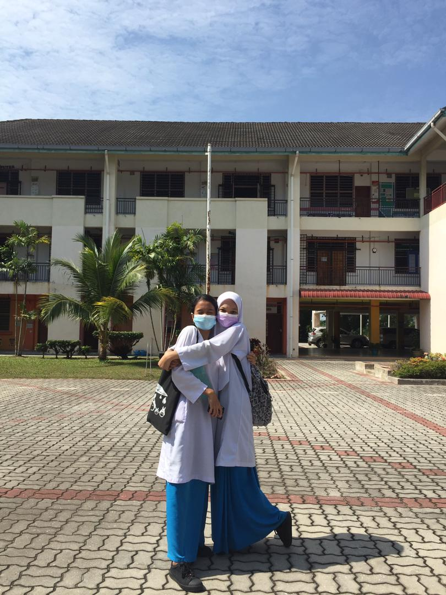
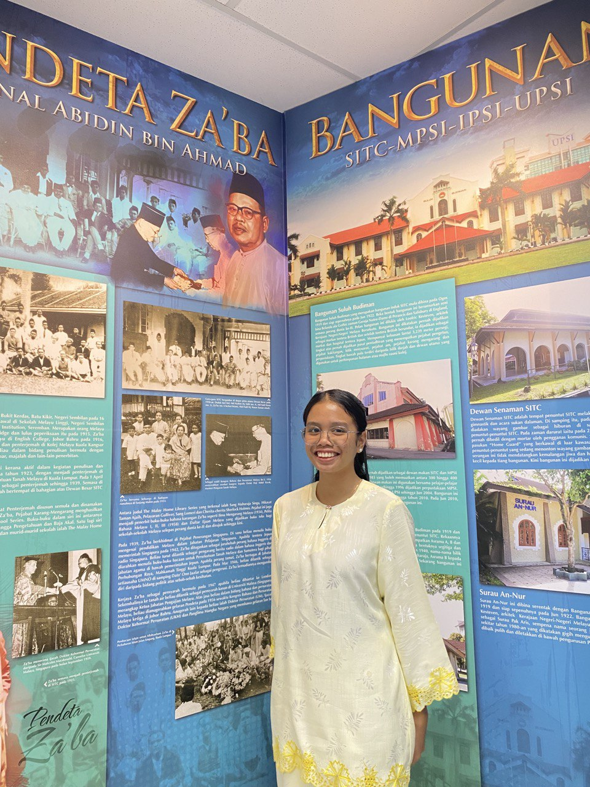

On 2019 I joined a traditional dance club.
Dancing in public was not easy for me which I had to smile during dancing and follow a step-by-step choreography that we had learned before the day of the event. What’s
more difficult is to smile while dancing. Probably for others, this is a simple thing, but not for me because I am too focused on my step and I am not smiling..
SPM

On 2020 I took the Sijil Pelajaran Malaysia(SPM). 2020 was a very difficult year for me and other friends. This is because we are a batch of SPM Promax,
where we took SPM at the age of 18. This was caused by the COVID-19 pandemic
𝐁𝐚𝐢𝐧𝐮𝐧 𝐥𝐢𝐛𝐫𝐚𝐫𝐲
 My company, UiTM Cawangan Tapah, paid a visit to another university library, UNIVERSITI PENDIDIDKAN SULTAN IDRIS, during my industrial training. We started with Tuanku Bainun's library, which made me happy because the company was allowing me to participate in this tour. Next, after we entered the first library, the Tuanku Bainun Library, we went to the mosque for a while to rest and for the Muslims to do worship, and then we continued our journey to the digital library